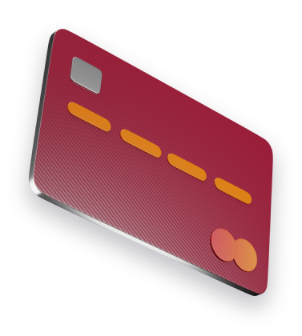
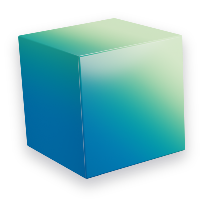

Draft · pending validation



Technical proposal · UNDP-JOR-00757
Made in Aqaba, found and bought online.
A bilingual Arabic and English website and marketplace for the Creative Circular Economy Centre, with hosting and support for 36 months.

Draft · pending validation

01 · What we heard
A first for Jordan deserves a first-class storefront.
5,000+ m²
site for Jordan's first circular economy centre
JD 1.2M+
investment led by ASEZA with UNDP and the EU
~90,000 t
of waste landfilled in Aqaba each year
36 months
of hosting and support requested
What you asked for
Design, develop, implement, host and maintain an integrated digital platform with an e-commerce marketplace to display, promote, order, pay for and sell products made at the Centre and by artisans, trainees and incubated enterprises, using the CCEC branding package.
What success looks like
Artisans list products in minutes, buyers can find, trust and pay for them, and the Centre's team runs it all in Arabic and English without depending on a developer.
Sources: UNDP-JOR-00757 on procurement-notices.undp.org (deadline 1 Dec 2026, 05:00 New York time); Petra News Agency, 11 June 2026 (groundbreaking, site area, investment and waste figures).
Draft · pending validation

02 · What the RFP really asks
Four things this platform has to get right.
1
Bilingual by design
Arabic right-to-left and English with equal quality, not a translated afterthought.
RTL layouts + bilingual CMS2
A real marketplace
Many sellers, one storefront: listings, orders, payouts and commission rules.
Multi-vendor e-commerce3
Payments that work locally
Local payment methods and delivery options, with clear terms for buyers.
Gateway confirmed at inception verify4
Built on the CCEC brand
The branding package from the separate assignment, applied consistently everywhere.
To confirm in discovery: hosting location and data requirements verify · payment gateway and banking setup verify · qualification criteria and required forms in the RFP verify
Draft · pending validation
03 · Our solution
One platform, four connected parts.
Institutional website
Programs, training, incubation and the Centre's impact.
Multi-vendor marketplace
Seller dashboards, orders, payouts and reviews.
Payments and delivery
Local gateway, delivery rules and clear buyer terms.

Impact dashboard
Sales, sellers and products, ready for UNDP and ASEZA reporting.
Arabic RTL and English Open-source stack, no license fees WCAG 2.1 AA Training for staff and sellers
Draft · pending validation
04 · Preliminary concept
A storefront for products with a second life.
ccec-aqaba · marketplace
CCEC · AQABAShopMakersTrainingAboutEnglishالعربية
Made in Aqaba. Made to last.
Products with a second life, made by the Centre's artisans, trainees and start-ups.
Upcycled toteby a CCEC artisan
JD —
Reclaimed-wood trayby an incubated start-up
JD —
Glass candle holderby a trainee
JD —
Textile cushionby a CCEC artisan
JD —
CCEC
السلة
Arabic right-to-left preview
Preliminary concept prepared for this proposal, not an official CCEC or UNDP design. Final work applies the CCEC branding package; products and sellers are illustrative.
Draft · pending validation
05 · Brand presence
The same care for every maker's product.
Concept brands created by TWO&HUMAN to show our art direction and standard of execution. Fictional brands, not client projects.
Draft · pending validation

06 · Scope and deliverables
Everything to launch, and 36 months of care.
Inception
Workshops with UNDP, ASEZA and the Centre; requirements, sitemap, seller journey.
Inception reportDesign
Bilingual UX and UI applying the CCEC brand; clickable prototype.
PrototypeBuild
Website and multi-vendor marketplace, payments, delivery rules, CMS.
StagingContent and onboarding
Seller onboarding kit, product photo guide, first catalogue loaded.
Pilot sellersTesting and launch
Security, accessibility, load and payment tests; go-live.
Launch36-month care
Hosting, updates, backups, security, support, quarterly improvements.
MonthlyAssumptions that protect your budget: hosting on infrastructure approved by UNDP verify · payment-gateway fees paid by the Centre · Arabic content reviewed by a native-speaking partner approved by UNDP · two revision rounds per deliverable.
Draft · pending validation

07 · Timeline and success measures
Live in 14 weeks, cared for over 36 months.
Weeks 1–3
Inception
- Workshops and requirements
- Sitemap and seller journey
- Inception report
Weeks 4–7
Design
- Bilingual UX and UI
- Clickable prototype
- Design approval
Weeks 8–12
Build and onboard
- Marketplace and payments
- Pilot sellers loaded
- Staging review
Week 13 on
Launch and care
- Tests and go-live
- Staff and seller training
- 36 months of care
Schedule aligned to the RFP once confirmed verify. Jordan is 6 hours ahead of Argentina; we keep a fixed daily overlap with working hours in Amman and Aqaba.
Sellers onboarded and active Orders and sales per month Page speed and uptime Staff publishing on their own
Draft · pending validation
08 · Team and the questions you should ask
Founder-led, and ready for hard questions.
Julio Briones
Co-founder · Team leader, strategy and content
Single point of contact for UNDP. Coordinates deliverables, revisions and QA for international marketing clients; works in English and Spanish.
Mariam Neme
Co-founder · Software engineer
Leads the marketplace build, payments, security, hosting and the 36-month technical care.
Established 2026 · Tucumán, Argentina · remote, in English and Spanish · founder-led: the people in this proposal do the work.
Who handles Arabic?
A native Arabic-speaking content and QA partner, named and approved by UNDP before work starts, reviews every Arabic page and template.
Can the Centre run it alone?
Yes. Staff and sellers are trained, and the open-source stack has no license fees or vendor lock-in.
Where is the data hosted?
On infrastructure approved by UNDP and ASEZA, with daily backups and security monitoring verify.
Who owns the platform?
UNDP and the Centre own domain, code, content and accounts, per UNDP's General Terms and Conditions verify.
Draft · pending validation


09 · Compliance and next steps
Ready to open the Centre's storefront.
Bilingual institutional websiteYes
Integrated e-commerce marketplaceYes
Ordering, payment and salesYes
CCEC branding package appliedYes
Hosting and maintenance, 36 monthsYes
Financial proposalSeparate file
Qualification criteria and formsMapped verify
Years in operation and similar projectsAs required verify
Registration and financial documentsAs required verify
1 · Submission
Technical and financial files as instructed, before 1 Dec, 05:00 New York time.
2 · Clarifications
We answer any question in writing.
3 · Inception
Workshops start in week 1.
Julio Briones · julio@twoandhuman.com · +54 381 509 8972 · twoandhuman.com